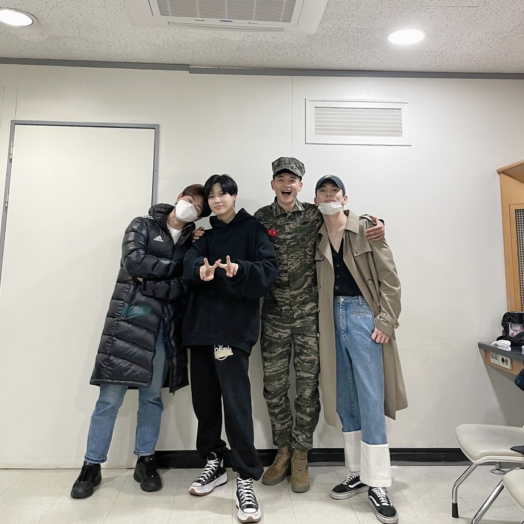

Minho SHINee Resmi Selesai Wajib Militer
Konten ini diproduksi oleh kumparan K-Pop 16 November 2020 13:18

Foto: Niken Nurani/kumparan
Setelah lama ditunggu para penggemar, Minho SHINee resmi selesai menjalani wajib militer.
Cowok kelahiran 1991 ini menyelesaikan kewajibannya usai bertugas sebagai tentara korps marinir sejak April 2019.
Menurut protokol COVID-19, Minho sebetulnya diizinkan mengambil
cuti terakhirnya selama 20 hari pada 27 Oktober 2020 dan dibebastugaskan dari rumah.
Tapi, ia memutuskan untuk merelakan cuti itu dan tinggal di pangkalan militer untuk melatih para tentara junior.
"Untuk my SHINee World!! SHINee World-ku yang kucintai! Salut!
Aku melaporkan bahwa sersan Choi Min Ho telah bebas tugas! Hari ini akhirnya datang juga,"
tulis Minho di website resmi SHINee.
"Masih belum terasa nyata, aku pun senang dan gembira! Shawol (fans SHINee) kami yang percaya padaku dan menungguku, bersiap untuk pergi ke mana pun dengan Choi Min Ho! Aku cinta kalian," tambahnya.

Tak lama kemudian, Key juga mengunggah foto para anggota SHINee yang telah lengkap di Instagram. Onew dan Key telah bebas wajib militer lebih dulu di tahun ini, sementara Taemin masih punya waktu yang cukup lama untuk menjalani wajib militer.
